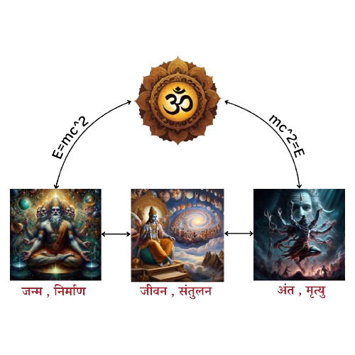

धर्म का मतलब होता है - नियम या कानून !
जैसे कि पृथ्वी का सूर्य के चक्कर लगाना !
जिससे दिन-रात का होना !
चन्द्रमा का पथ्वी के चक्कर लगाना !
एक सौर परिवार का काम करना , गैलेक्सी या
ब्रह्माण्ड का !
जैसे की एक चिड़िया का धर्म , सुबह चहचहाना , दाना चुनना , और रात को अपने घोंसले में लौट जाना (
उदाहरण के रूप में ) !
जैसे आज के देशों के संविधान !
अनुशाशन या भ्रम्हचर्य , किसी कंपनी की नीतियां
और एक छात्र की रोज की दिनचर्या जिसका वो कभी भी पालन नहीं करता 🤣 !
मेरे पिता के अनुसार , एक पारिवारिक धर्म ( परिवार की देखभाल करना चाहे जो भी हो
जाये ) , और मैं तो वसुधैव कुटुम्बकम का पालन करता है !
जैसे की जब मानव सभ्यता का विकाश हो रहा होगा , तब उसका बहुत सी अलग प्रजातियों से
सामना हुआ होगा, जिन्हे आज हम जानवर या पक्षी कहते है !
तो हमने कुछ नियम बनाये होंगे - उनसे बचाव के लिए , वो धर्म ही है !
फिर हमने अपनी अपनी सभ्यताएं या अपने अपने हिसाब से धर्म बनाये , जैसे के आज के
मानव के अपने अपने
धर्म हैं , और भी बन रहे हैं !
दरअसल आज की दुनिया में जितने भी धर्म हैं - वो उन लोगों के पूर्वजों का इतिहास और
उनके पूर्वजों के
विचार हैं !
धर्म इसलिए बनाने पड़ते थे , क्योंकि ज्यादातर मनुष्य अपने जीवन को संतुलित नहीं कर पाते !
संतुलन न कर पाने वालो की संख्या ज्यादा होती है !
फिर लोगों ने अपने अपने धर्म बनाये , जैसे कि हिन्दू , मुस्लिम , सिख , ईसाई, जैन , वुद्धिस्म . . .
. . . . !
जब इन धर्मो का भी लोगो ने पालन नहीं किया तब आया लोकतंत्रत और
संविधान !
पहले था राजतंत्र !
मजे की बात तो ये है लोग उसका भी पालन नहीं करते !
अब कोन सा धर्म बनानोगे ?
सबका धर्म और ईश्वर एक ही है - तुम बंट गए तो , ईश्वर भी बंट गया !
धर्म को किताबों में कैद नहीं किया जा सकता , धर्म तो छण छण बदल जाता है परिस्थितीयों के आधार पर ,
पहले चैतन्य हो जाओ धर्म समझ जाओगे !
एक धर्म है जिसे ईश्वर का धर्म कहते हैं, ये धर्म मानवों द्वारा नहीं बनाया गया जैसे कि हिंदू ,
मुस्लिम, सिख, ईसाई ! बल्कि मानव सभ्यता की शुरुआत इसी धर्म से हुई !
सनातन का मतलब होता है शाश्वत ,
अनंत , अनादि , इटरनल , ईश्वर
, शून्य , ब्रह्म !
जो कुछ भी दिख रहा है सब सनातन है !
सनातन धर्म और सनातन एक ही है - निराकार में सनातन है और
साकार में सनातन धर्म - निराकार में शून्य
है और साकार में एक !
सनातन , सनातन धर्म के अनुसार अलग अलग रूपों में अवतरति होता रहता है कण से
ब्रह्माण्ड तक !
यह ब्रह्माण्ड सनातन धर्म का पालन करता है ,क्योंकि इस ब्रम्हांण्ड का निर्माण सनातन
धर्म के पहले
नियमानुसार हुआ !
सनातन धर्म तीन नियमों का पालन करता है -
बृम्हा (जन्म,निर्माण)
विष्णु (जीवन,संतुलन)
महेश (मृत्यु,अंत)

हिन्दुओ के अनुसार , ब्रम्ह्माण्ड पंच तत्वों से मिलकर बना है !
पृथ्वी , जल , अग्नि ,
वायु , आकाश !
ये पांचों तत्व खुद में सनातन धर्म है !
जैसे की किसी एक - ब्रह्माण्ड का , गृह का , गैलेक्सी का , मानव का , जानवर का , पेड़ का ,
जन्म
होना , जीवन जीना और अंत हो जाना !
यह ब्रह्मांड जीवित है !
मनुष्यों के वश में सनातन धर्म का पहला और तीसरा नियम (
जन्म और मरण ) तो हैं नहीं , अगर होते तो आज
का मनुष्य उन्हें भी अपने अनुसार चलाता !
बचता है , तो दूसरा नियम मतलब जीवन !
दूसरे नियम का पालन करना मतलब जीवन में संतुलन बनाये रखना !
वो होता आत्म अवलोकन से ( Self Observation ) !
जब एक मानव सनातन धर्म का पालन करना शुरू करता है, तो वो अपने जीवन को संतुलित
करना शुरू कर देता है
!
वो होता है आत्म अवलोकन ( Self Observation ) से - खुद के कर्मों पर ध्यान देकर !
फिर वह समय के अनुसार धीरे धीरे सनातनी होता जाता है !
जब एक मनुष्य पूर्ण सनातनी बन जाता है , तब वह मुक्त हो जाता है जन्म - मरण से ,
जन्म - मरण उसके
लिए भौतिक घटनाएं मात्र हो जाती हैं !
वो सनातन हो जाता है , वो शिव हो जाता है , वो
स्वयंभू हो जाता है !
वह जगत चेतना से जुड़ जाता है - जिससे एक मनुष्य का निर्माण हुआ वह उसी से मिल जाता है !
वो उससे जुड़ जाता है , जिसका जुड़ाव शून्य है !
वो शून्य हो जाता है !
वो मुक्त हो जाता है !
फिर उसे , किसी भी मनुस्यों द्वारा बनाये गए धर्म या संविधान की जरुरत नहीं पड़ती !
वह खुद के जीवन को संतुलित कर लेता है - किसी भी धर्म या संविधान में रह कर भी !
ज्यातर मनुष्य सनातन धर्म का पालन नहीं करते क्योंकि उन्हें लगता है कि सनातन धर्म बस कुछ
लोगों का
है , उससे ही तो सब कुछ है !
जो मनुष्य सनातन धर्म का पालन नहीं करते - मतलब जीवन में संतुलन नहीं !
फिर युद्ध होते हैं !
ऐसे में उन लोगों को भी युद्ध करना पड़ता है जो खुद को संतुलित कर पाते हैं जैसे कि
पांडव !
अगर पांडव जैसे लोग युद्ध न करें तो मानव सभ्यता का अंत हो जायेगा !
संतुलन जरुरी है !
क्योंकि जो लोग जीवन को संतुलित नहीं कर पाते , वो खुद के साथ पूरी मानव सभ्यता को खतरे में डाल
देते हैं , और खुद भी ख़त्म हो सकते हैं ! इतिहास गवाह है
मनुष्य , जो जीवन को संतुलित नहीं कर पाते , वो भृष्टाचार ,
रिश्वतखोरी , अपराध ये सब करते हैं, ऐसे लोग
युद्धों , गृह युद्धों को जन्म देते हैं , उदाहरण के लिए आज के
समय पर नजर डाल सकते हैं !
चलो एक बार पूरी मानव सभ्यता पर नजर डालते हैं - वो तो कभी डालेंगे नहीं !
😀
इस गृह ( पृथ्वी माँ ) ने मानव सभ्यता को जन्म दिया !
एक कोशिका से लेकर आज के मनुष्य तक !
इसी गृह ने चेतना ( जीवन , आत्मा ) दी !
इस गृह की भी चेतना है !
मनुष्य को शरीर दिया !
शरीर कैसे बना ? वो बना एवोलुशन से , बृम्हा ( विज्ञान ) से !
मनुष्य के जन्म लेने के बाद उसकी सभी जरूरतों का सामान दिया !
जैसे की खाना , घर , कपड़े , और जो भी जरूरतों
का सामान !
मनुष्य कह सकता है की ये कपड़े , घर , या खाना कर्म करके बनाया है या
कमाया है !
तो ऐसे ये गृह भी कर्म कर रहा है , ये बृम्हांड भी , सूर्य भी , मौसम भी , सबकुछ
चल रहा है !
सबकुछ काम कर रहा है !
अगर ये सब काम करना बंद करदे तो मानव सभ्यता का अंत हो जायेगा !
( बृह्माण्ड एक जाल की तरह है, सब कुछ जुड़ा हुआ है एक दुसरे से )
जब मनुष्य कहता है " मैं " , तो मैं होता है एक
नजरिया या विचार !
कोई भी विचार एक इंसान का नहीं होता , विचार हमेशा सामाजिक होता
है !
मनुष्य अपने पूरे जीवन में जो जानकारियां एकत्र करता है उससे एक नजरिया बनाता है
तो उसे वो कहता
है " मैं " ( नाम )
लेकिन “ मैं ” समाज से एकत्र की गयी जानकारियों या विचारों का बस एक समूह है ,
मतलब एक नजरिया !
वो नजरिया है - दुनिया देखना का - दुनिया है एक मनुष्य की !
हर इंसान की एक अलग दुनियां होती है एक अलग नजरिया !
जब एक मनुष्य का अंत होता है, तो एक नजरिया “ मैं ” का अंत होता
है !
एक दुनिया का अंत होता है , उस नजरिए के लिए !
क्योंकि वो नजरिया “ मैं ” दुनिया का अवलोकन करना बंद कर देता है !
इसलिए लोग कहते है की यह संसार एक मोह - माया है , संसार मोह - माया नहीं है !
मोह - माया है - " मैं " नामक नजरिया ( एक मानव की दूनिया ) , जिससे एक मानव इस
दुनिया का अवलोकन कर पता है !
संसार सत्य है सनातन है और तुम भी , बस “
मैं ” असत्य है !
और यह नजरिया एक न एक दिन खत्म हो जाता है मतलब उस नजरिए के लिए एक संसार का
खात्मा !
रही बात इस संसार की तो इसकी भी उम्र है वो भी किसी न किसी दिन ख़त्म हो जायेगा !
बचेगा सनातन - शून्य - अनंत !
और फिर , फिर से होगा बिग बैंग !
यह एक निरंतर चक्र है जो अनंत है जो सनातन है !
यह पूरा का पूरा संसार जुड़ा हुआ है चाहे वो साकार में हो या निराकार में !
मतलब मानव सभ्यता को इस ग्रह ने सब कुछ दिया !
चेतना , शरीर , “ मैं ” ( जो समाज का दिया हुआ
है ) , कपड़े , घर , खाना ,
सबकुछ !
तो मनुष्य के पास बचा क्या , कुछ नहीं !
मतलब शून्य , यही ईश्वर है , यही सनातन है, जो
कुछ नहीं है, और सब कुछ है !
जब एक मानव ( नजरिया ) का अंत होता है , तो वह छोड़ जाता है !
एक कहानी या एक नजरिया या एक विचार !
कहानी ?
उत्तर के लिए एक और प्रश्न
जीवन एक कहानी है , जो एक नोटबुक रूपी मनुष्यों की मेमोरी में
लिखी जाती है , किसी एक मनुष्य के कर्मों के द्वारा !
एक कहानी कई नोटबुक ( अलग - अलग मानव की मेमोरी ) में लिखी जाती है
अपने-अपने नजरिये से !
एक कहानी के कई नजरिये हो सकते हैं , और हर नजरिये की अलग कहानी
मान लो एक मनुष्य अपने जीवन की कहानी का एक पेज रोज लिखता है !
वो पेज भी अलग अलग नजरिये ( मनुष्य ) से देखे जाते हैं !
जब एक मनुष्य का अंत होता है , तो उसकी नोटबुक फिर से खाली हो जाती है
बचती है एक कहानी , अन्य लोगों के लिए !
कभी कभार किसी की कहानी अमर हो जाती है !
तो वो मनुष्य अमर हो जाता है।
जैसे की राम , हनुमान , कृष्णा ,
बुद्धा, ओशो ऐसे जो भी लोग हुए हैं !
क्योंकि इन लोगों ने खुद के जीवन को संतुलित किया और दूसरों का करवाया !
फिर ऐसे लोगो की कहानी इतिहास बन जाती है !
जैसे कि कुछ लोग भगवान राम को पसंद करते हैं तो कुछ नहीं !
कुछ लोग हिटलर का समर्थन करते हैं तो कुछ नहीं !
एक मनुष्य को इस ग्रह ने सब कुछ दिया , चेतना , शरीर , “ मैं ” ( जो कि सामाजिक जानकारी है ) , कपड़े
, घर , खाना , सबकुछ, तो मानव के पास बचा क्या , कुछ नहीं, मतलब
शून्य
यही ईश्वर है
यही सनातन कहलाता है
जो कुछ नहीं है - और सब कुछ है
वही साकार है - वही निराकार है
वही मोक्ष है
वह कुछ भी नहीं - और सबकुछ है
उससे कुछ नहीं है - और उससे ही सबकुछ है
वही एक है , वही अनेक है
उसका कोई नाम नहीं है , लोगों ने अपने अपने हिसाब से नाम दिए है !
अगर उसका कुछ नाम है तो वो है खोज , खुद की खोज !
पूरा का पूरा ब्रह्मांड ही ईश्वर है . इसलिए लोग कहते है कि एक पत्ता भी उसकी
मर्जी से हिलता है
क्योंकि जो कुछ दिखाई देता है , सब वही है !
उसने बस एक शुरुआत की और उसके बाद जो भी हुआ वो सब कुछ समय के अनुसार खुद व खुद हुआ !
कुछ लोग प्रश्न करते हैं कि बिग - बैंग से पहले क्या था ? , वही था , वही है , और
वही रहेगा !
बिग बैंग तो बस एक नई शुरुआत थी , उससे पहले भी ब्रह्माण्ड थे यह
एक चक्र है , निर्माण , संतुलन ,
अंत !
इसीलिए उसको सनातन कहा जाता है , अनंत कहा जाता , जगत चेतना कहा जाता है
एक गाना है “ कुन फाया कुन ( kun faya kun) ”
जब कहीं पे कुछ नहीं भी, नहीं था
वही था, वही था, वही था, वही था
वह जो मुझ में समाया
वह जो तुझ में समाया
मौला, वही वही माया
एक गाना है नाम है " हर लहजा बा शकल " गायक - अजब शाहर (
फ़रीद अयाज़ )
इसमें एक लाइन है :-
ख़ुद कूज़ा-ओ, ख़ुद कूज़ागर-ओ, ख़ुद गिल-ए-कूज़ा
ख़ुद रिन्द-ए-सुबू कश
ख़ुद बर सर-ए-आन कूज़ा ख़रीदार बरामाद
बिश्कस्त -ओ रवां शुद
मतलब:-
वो खुद ही कूजा है खुदा कूजा बनाने वाला है और खुद ही कूजे की मिट्टी है
फिर खुद ही उस कूजे को पीने वाला
सरे - आम खुद ही कूजे का खरीदार बनकर जाहिर होता
इस लिए उसके लिए कूजे का तोड़ना भी जायज है
“ भगवान को कैसे पाएं “
भगवन को पाने के दो तरीके हैं
या तो बन जाओ , या बना लो
या तो खुद में खो जाओ या दुसरे में
दोनों ही रास्ते कर्म आधारित हैं क्योंकि जीवन कर्माधारित है
“ बन जाओ “
भगवान को माना नहीं जा सकता , भगवान को सिर्फ जाना जा सकता है !
जो लोग कहते है कि वो आस्तिक हैं, या जो कहते है कि वो नास्तिक हैं
, तो ऐसे लोग बस अंधविश्वासी होते
हैं , क्योंकि उन लोगों ने जानने से पहले मान लिया की वो आस्तिक या नास्तिक हैं !
आस्तिक व नास्तिक बस " मैं " ( मन ) के दो विचार है , जो की बस एक सामाजिक जानकारी
हैं और सामाजिक
विचार मोह माया के सिवाय कुछ नहीं हैं , ये विचार एक मनुष्य के अंत के साथ खत्म हो जाते है !
आज कल हर किसी को भगवान को पाना है , ये मंदिर में लगी लम्बी लंबी कतारें यही
दर्शाती है !
पर भगवान को पाने के लिए , भगवान को पाने की इच्छा से भी मुक्त होना पड़ेगा !
भगवान उन्हीं को मिलता है जो इच्छामुक्त है जिन्हें न भगवान को पाने की इच्छा है,न स्वर्ग नर्क की
चिंता है !
भगवान को पाया नहीं जाता भगवान बना जाता है !
अगर भगवान को सच में किसी को जानना ही है तो उसका बस एक ही रास्ता है , खुद को जानना और खुद को
जानने के लिए खुद को मिटाना , मतलब " मैं " ( सामाजिक विचार ) को
मिटाना !
“ मैं “ मिटाने का मतलब डिलीट करना नहीं , उससे ऊपर उठ जाना है !
” यह वेबसाइट उन्हें ही समझ आएगी जो , " मैं " से ऊपर उठेंगे !
क्योंकि गीता उन्हीं को समझ आती है , जो ऊपर हो ! जैसे -
ज्ञान देने वाला सारथी ( कृष्ण ) नीचे और ज्ञान सुनने वाला
श्रोता ऊपर “ अर्जुन “ !
गीता समय के अनुसार बदल जाती है , यही गीता की खसियत है !
फरीद अयाज कहते हैं ( पिया घर आया ) -
“ पढ़ पढ़ आलम फाजिल होया
कदे अपने आप नु पढिया नहीं “
वहीँ लकी अली कहते हैं ( सफरनामा )
“ जिसे ढूंढा जमाने में
मुझी में था
सफरनाम सवालों का “
तुम्हारे सवालों के जवाब तुमसे ही मिलेगे, कोई रास्ता तो बता सकता है , पर मंजिल तक तुम्हे खुद ही
पहुंचना पड़ेगा , इसलिए कहा जाता है कि अकेले आए हो अकेले ही जाओगे !
" मैं " को मिटाने के लिए कुछ काम कर सकते हो , जैसे -
अगर ईश्वर ( पिता - मोक्ष ) को जानना है तो पहले अपनी माँ को
जानो ( यह सार्वभौमिक नियम है )
माँ कौन है ? माँ तो यह धरती है !
एक माँ जिसने तुम्हें जन्म दिया और बड़ा दिया , तुम्हारी सभी जरूरतों का ध्यान रखा !
एक वो माँ जिसने पूरी मानव सभ्यता को जन्म दिया , और उसकी सभी जरूरतों का ध्यान रखा , एक मनुष्य को
सबकुछ दिया !
बदले में मानव ने इस माँ के आँचल में खून की होलियाँ खेली आपस में, क्लाइमेट को
चेंज किया , और इस
माँ पर बम फोड़े , तो ये सब करना बंद कर दो !
खुद का अवलोकन करना शुरू कर दो , अगर तुम्हारे हिसाब से अगर तुम कोई गलत काम कर
रहे हो , जैसे किसी
को प्राणी को मारना या खाना ( तुम्हारी बजह से वो मारा जा रहा है ) या जो भी ऐसे काम हो सकते हैं बंद
कर दो !
हर किसी में और हर चीज़ में सकारात्मकता के नजरिये से देखने के प्रयाश करो !
क्योंकि जब आप किसी में सिर्फ नकारात्मकता ही देखते हैं तो इससे उस व्यक्ति को कुछ नुकसान नहीं होता
बल्कि आपका मन उस नकारात्मक विचार में डूब जाता है , और आप ईश्वर से और दूर चले जाते हैं !
कोई भी विचार नकारात्मक नहीं होता और न ही सकारात्मक ये बस वो सामाजिक भाव है इनमें न उलझे हर किसी
से प्यार करें।
दुनिया से थोड़ा दूर ( Cut of the Distractions ) जाओ !
मैं यह नहीं कह रहा कि आप सब-कुछ छोड़कर कहीं और चले जाएं , यहीं रहे
जीवन कर्म प्रधान है !
कर्मों से कोई नहीं बच सकता , कर्म तो करना ही पड़ेगा !
बस उन चीजों से मतलब रखें जिनसे आपको और आपके परिवार को फायदा हो सकता है !
अपने अंदर एक शांतिपूर्ण माहौल बनाएं !
खुद को शांत रखो हर परिस्थिति में !
शांति का मतलब ये नहीं होता , बाहर की दुनियाँ की शांति बनाये रखनी है !
खुद के अंदर। “ Inner Peace By Kungfu Panda 😆 ”
यह ऐसा है जैसे आप यहां हैं , लेकिन यहां नहीं हैं !
मैं ये भी नहीं कह रहा की पैसा न कमाए , खूब पैसा कमाएं !
पैसा का अविष्कार इसलिए हुआ जिससे मनुष्य एक दुसरे से शान्ति से व्यापार कर सके और शान्ति से रह सके
!
लेकिन मनुष्य ने पैसो को ही सबकुछ मान लिया और उसको कमाने के लिए सबकुछ किया चाहे वो सही हो या गलत
!
और उसका परिणाम भी भुगत रहे हैं , सब लगे पड़े हैं एक रेस में , जैसे कहीं जाना हो !
इस दुनियां में जो कुछ आविष्कार हुआ उनमें से ज़्यादातर मानव सभ्यता के कल्याण के लिए हुआ या
आरामदायक जीवन बनाने के लिए हुआ , लेकिन समय के साथ वो आविष्कार मनुष्यों के लालच के भेंट चढ़ गए और
उसका परिणाम निकला जिनका आविष्कार मानव सभ्यता के कल्याण के लिए हुआ था अब वो ही आविष्कार मानव
सभ्यता के लिए घातक बन चुके हैं
कारण - लालच - अचेतना !
न ही किसी को खुद पर हावी होने दो , न किसी पर हावी हो , यह तुम्हारा जीवन है अपने हिसाब से जियो
किसी की भी गुलामी न करो , खुद के फैसले खुद से लो , सुख दुःख तो जीवन का हिस्सा है , जीवन को
सार्थक बनाओ , यही मेरी सलाह है !
एक मनुष्य अपनी पूरी जिंदगी भौतिक दुनियाँ में भागता रहता है !
वो भागता इसलिए रहता है क्योंकि उसकी प्रवृति है खोज की , जैसे प्रकृति की है।
मानव भी प्रकृति है !
तो भागता रहता है , शुकून के लिए !
लेकिन ज़्यदातर लोग शुकून भौतिक दुनियाँ या भविष्य में तलासते हैं !
लेकिन ये दोनों ही रास्ते गलत हैं - ई व्रोन्ग नंबर है ! 😆
शुकून तो है वर्तमान में !
जब एक मनुष्य किसी काम को द्रढ़ता से करता है , तो उसे भविष्य की चिंता नहीं रहती , वो भूल जाता है
कि वो सफल रहेगा या असफल !
फिर वो जय - पराजय के बारे में नहीं सोंचता और लग जाता है अपने काम में , और काम
ही बन जाता है उसका
ध्यान - और उसका वर्तमान !
न तो उसे यश - अपयश परेशान करता है और न ही मृत्यु का डर !
वो योगी हो जाता है , निष्काम योगी बन जाता है !
फिर अपने काम को ही पूजा बना लेता है !
फिर वो कर्म नहीं करता , वो करता है यज्ञ !
इसिलए कहा गया , कि कर्म करो तो जैसे यज्ञ कर रहे है , उतनी ही पवित्रता से जिसकी कोई सीमा न हो ,
जिसकी सीमा शून्य हो !
आपके आस-पास जो भी भौतिक वस्तुएं हैं, उन्हें उनमें खोए न रहें।
इससे आपका मन मुक्त रहेगा और फिर एक दिन ऐसा आएगा जब आपको सब कुछ यहीं दिखाई देगा !
जब खुलेगी तीसरी आँख ( एक नया नजरिया ) !
फिर एक दिन आएगा जब आप सनातनी बन जाएंगे !
आप सनातन हो जाएंगे , ईश्वर हो जाएंगे !
तुम्हे लगता है कि भगवान कही आकाश में बैठा है , वो हर जगह है वो तुम्ही ही हो !
तुम भी नर से नारायण और नारी से लक्ष्मी बन सकते हो !
ध्यान दो खुद पर - ( खुद के कर्मों पर )
ध्यान रखो दूसरों का - ( कोई भी प्राणी हो )
“ बना लो “
जो लोग खुद को आस्तिक कहतें हैं , या धार्मिक स्थल जाते हैं , वो
एक श्रद्धा है !
धार्मिक स्थल वो लोग आते हैं , जो भगवान बनाते हैं , जो भगवान बन भी जाते हैं, वो भी आते हैं !
यही तो भगवान का खेल है या ख़ूबसूरती है !
जो लोग भगवान बनाते हैं , बनाने का मतलब यहाँ पर सिर्फ बनाने से नहीं है !
वो प्राण प्रतिष्ठा करते हैं , वो प्रेम करते हैं , वो
श्रद्धा का भाव रखते हैं !
इसीलिए धार्मिक स्थलों पर सकारात्मकता मह्सूस होती है !
जहाँ पर प्रेम हो , वो वहीं होता है !
मैं कह रहा हूं कि अगर किसी के प्यार में पड़ना हो तो पड़ जाना !
उसे तपस्या बना लेना !
प्यार कोई एक तरफा या दो तरफा नहीं होता !
प्यार प्यार होता है !
प्यार ध्यान होता है !
अगर खुद से न प्यार कर पाओ !
तो किसी और से कर लेना !
वो भी तो बही है !
यह ऐसा ही है !
इसे पाने के दो ही रस्ते हैं !
या तो खुद बन जाओ , या किसी को बना लो !
चाहे वो पेड़ हो या इंसान , मूर्ति , पत्थर या जानवर !
सब वही है , सब वही है !
आज कल धार्मिक स्थलों में ज्यादातर औपचारिकताएँ होती हैं , वो श्रद्धा का भाव नहीं होता , श्रध्दा
का मतलब होता निस्वार्थ प्रेम !
भक्ति ऐसी होनी चाहिए
मंदिर मांगने की जगह नहीं , जागने की जगह होती है !
दरअसल आप भगवान से नहीं खुद से मांग रहे होते हैं , क्योंकि आप भगवान ही तो हैं , बस आप को पता नहीं
हैं " मैं " के कारण !
रही बात मांगने की तो उसके पीछे अभिव्यक्ति ( Manifestation law ) काम करता है !
इंसान जो सोचता है वही होता है , जैसे आज की दुनियाँ एक ऐसे लूप में फसी हुयी है -
जिसमे हर कोई कह
रहा है कि दुनियाँ ख़तम हो जाएगी , ऐसी कई फिल्में बन चुकी हैं - जिसमे दुनियाँ खत्म हो चुकी
है !
तो हो जाएगी , यह ऐसे ही काम करता है , मनुष्य जो सोचता है वही होता है !
यही उसका नियम है , उसके शब्दालाय में “ न “ नहीं है - सब “ हँ “
है !
क्योंकि तुम उससे नहीं खुद से मांग रहे होते हो !
तुम तो भी वही हो !
जो चाहोगे वही होगा !
जैसा सोचेंगे वैसे ही हो जाओगे !
जो लोग भगवान में श्रद्धा रखते हैं या उन्हें मानते हैं , तो यही वक्त है कृष्ण को बुलाने का क्योंकि
आज की परिस्थितियां केवल कृष्ण ही संभाल सकते हैं !
कृष्ण बाहर से नहीं आते वो आते हैं अंदर से , अगर बाहर आ भी गए तो पहचान नहीं पाओगे उसके लिए आपको
अर्जुन बनना पड़ेगा !
कुछ लोग कहते है कि ईश्वर को पाना है तो उसके सामने आत्मसर्पण करना पड़ेगा, ईश्वर
तुम्हारा कोई
दुश्मन नहीं है जो आत्मसर्पण करवाएगा, उसका सुख - दुख तो तुमसे
ही है , तुम्हारी खुशी में ही उसकी
खुशी है उसका कोई नहीं है बस तुम हो !
ईश्वर कुछ नहीं चाहता , तुम्हारी चाह में ही उसकी चाह है !
मैं चाहता हूँ कि इस दुनियाँ के हर कोने कोने से " हर हर महादेव " के नारे गूँजने
चाहिए !
यह आप लोगो की जिम्मेदारी है !
यही नियम है -
ध्यान महादेव ज्ञान विष्णु विज्ञान ब्रह्मा
ये ऐसे ही आते हैं |
ध्यान ज्ञान विज्ञान किसी समस्या को हल करने का तरीका !
ध्यान ( किसी भी समस्या पर ध्यान ) - ज्ञान ( जानकारी एकत्र करें
और समस्या हल करें ) - विज्ञान (
प्रयोग करें )
शायद इस बच्ची की प्रार्थना सुन ली गयी है !
महादेव आ धमके हैं ! 😂
अब तुम्हें उनका स्वागत अपने शहर , कस्बे और गांव में करना होगा !
हर हर महादेव के नारे लगाओ !
एक संखनाद इसके लिए एक तारिख और एक समय बता दिया जायेगा !
महादेव ऐसे ही हैं , या तो तपस्या करते हैं या तांडव !
लेकिन अब वक्त आ गया महादेव के तांडव करने का !
अब वक्त आ गया विष्णु को सुदर्शन उठाने का !
क्योंकि यही नियम है , यही वादा किया गया था !
शायद इनकी भी शायरी सुन ली गई है !
सब यही हैं , सबकी आस्थाएं , सबके भगवान , सबके देवता , वो सब खेल देखने आए हैं !
वो खेल है - Game Of God !
उसी का खेल है , वही खेल रहा है। वही देख रहा है !
वो जब भी आता है , अनेक को एक करता है , और एक को शून्य करता है !
क्योंकि वही एक है ,वही अनेक है !
वो जब भी आता है , धर्म के पीछे नहीं - धर्म उसके पीछे चलता है !
इतिहास उठा के देख लो !
वो जो भी करता है - वही धर्म बन जाता है !
वो जब भी आता है , शास्त्र पढ़ता नहीं शास्त्र लिखता है !
इतिहास उठा के देख लो !
उसके कर्मो के आधार पर शास्त्र लिखे जाते है !
वो जब भी आता है तो भूत, वर्तमान और भविष्य एक हो जाता है !
क्योंकि वो अपने जीवन की कहानी एक साथ लिख रहा होता है !
क्योंकि वो समय से परे है !
और आके शून्य हो जाता है !
स्वर्ग नर्क को समझने से पहले मनुष्य की स्थिति को समझते हैं !
एक मनुष्य कल के बारे में तभी सोचता है जब उसका आज ख़राब रहा हो ,
और कल कभी आता ही नहीं जो कुछ है ,
आज ही है , अभी ही है !
या जब एक मानव कहता है मेरा भी समय बदलेगा !
या कहता है सबकुछ ठीक हो जाएगा !
इन सभी वाक्यों में एक चीज समान है वो है आश ( Hope ) !
आश का मतलब यह नहीं होता कि जो कुछ होगा ठीक ही होगा !
आश का मतलब होता है जो कुछ होगा देखा जायेगा ! 😁
कहने का मतलब भविष्य की चिंता छोड़ कर वर्तमान पर ध्यान दो !
मनुष्य उन चीजों की कल्पना करता है , जो चीजे उसके पास आज नहीं हैं !
वैसे ही मनुष्य स्वर्ग की परिकल्पना तभी करता है जब वो नर्क में जी रहा
हो !
या उसे लग रहा हो की उसका जीवन बेकार है, तो वो मरने के बाद स्वर्ग में
जाके सभी चीजें पा सकेगा जो
उसको जीवित हुए नहीं मिली !
दरअसल स्वर्ग - नर्क , " मैं " ( सामाजिक विचार ) के दो विचार
हैं !
जिनका " मैं " खो चूका होता है , उनके लिए स्वर्ग - नर्क जैसा
कुछ नहीं होता !
ये बस सामाजिक जानकारियां हैं , जो इसलिए बनायीं गयीं थी जिससे लोग सही
गलत का चुनाव कर सके , सही -
गलत भी सामाजिक जानकारियां हैं , जैसे की धर्म - अधर्म !
ये जितनी ऐसी सामाजिक जानकारियां ( विचार ) हैं , ये सभी विचार एक ही सिक्के के दो पहलू
हैं !
जहां धर्म है वही अधर्म है
जहां सत्य है वहीं असत्य है
जहां जय है वही पराजय है
जहां यश है वही अपयश है
इस दुनियाँ में हर व्यक्ति धर्म , सत्य के साथ है , फिर भी दुनियाँ में इतना
अत्याचार है !
क्योंकि उन लोगों कुछ मान लिया !
बस यही दिक्क्त , कुछ मान लेना - जानने से पहले !
एक नजरिया " मैं ", हमेशा धर्म के साथ ही होता है , तो वहीं दुसरे
नजरिये के हिसाब से वो नजरिया
अधर्म से साथ होता है !
जैसे कि एक आतंकवादी अपने नजरिये से धर्म से साथ होता है , तो दुसरे के हिसाब से
वो अधर्म से साथ
होता है !
दरअसल ये दोनों ही " मैं " ( सामाजिक विचार ) के दो विचार होते हैं !
अगर एक आतंकवादी अपने " मैं " को त्याग दे तो अल्लाह हो जाये !
जैसे की मंसूर !
मंसूर को लोगो ने मार दिया , जिसका हर्जाना आज भी भुगत रहे हैं !
ऐसे बहुत लोग हुए ,जिन लोगों से सत्य बताने का प्रयाश किया , तो उन्हें मार
दिया गया , जिसका हर्जाना
आज तक पूरी की पूरी मानव सभ्यता भुगत रही है !
उन लोगों को मारने या परेशान करने का कोई दंड भगवान नहीं देता , उसका कारण
वो स्वयं ही होते हैं उनका
" मैं " होता है !
क्योंकि जीवन कर्म प्रधान है !
जो भी मनुष्य स्वर्ग , जन्नत , हेवन में जाने की बात करें या उसके बारे में सोच
रहे हो समझ लेना
उनकी जिंदगी नर्क है , जहन्नुम है , हेल है !
दरअसल स्वर्ग - नर्क जैसा कुछ नहीं होता , ये बस अचेत लोगों के लिए दो विचार है जिससे वो डर
कर सही
कर्म कर सके !
लेकिन लोगों ने इसमें भी रास्ते ढूढ़ लिए , उन लोगों स्वर्ग जाने के लिए
मासूम लोगों को मारना शुरू कर दिया और खुद को !
उनका कुछ नहीं होता , ऐसे लोग जब तक जिन्दा रहते है तब तक जिन्दा लाश की तरह होते
हैं , और फिर मरने
के बाद भी भटकते हैं , क्योंकि ऐसे लोगो का " मैं " ( पाप कर्म योग )
नामक आवरण बहुत प्रबल होता है , और
जब तक ये आवरण नहीं हटता तब तक ये लोग भटकते ही रहते हैं !
ये हर जगह होते हैं बस मानव उन्हें देख नहीं पाते , कुछ लोगों को मह्सूस होते हैं तो वो उन्हें
भूत
कहते हैं !
तुम्हें लगता है कि कोई स्वर्ग है !
जो कुछ है , यही है , यही स्वर्ग है , तुमने बस इसे नर्क बना रखा
है !
इसीलिए तुम स्वर्ग की कल्पना करते हो !
इतने मौसम हैं , इतने रंग हैं , विभिन्न प्रकार के जानवर हैं , चिड़िया हैं , पेड़ पौधे हैं !
और क्या चाहिए - यही तो स्वर्ग है !
यह सब तुम्हें दिखता ही नहीं !
दिक्कत ही यही है !
मनुष्य को जो प्राप्त है - वही अपर्याप्त है
जो अपर्याप्त है - वही प्राप्त है
यही स्वर्ग है , और किसी समय में भारत इस स्वर्ग का केंद्र हुआ करता था !
यह सब तुम्हारे भोगने के लिए ही तो बना है , तुम्हीं लोग तो हो भगवान , इंसान !
बस भोगने का तरीका सही नहीं है - इससे तुम्हारा ही नुकसान होगा !
तुम चाहो तो नर से नारायण और नारी से लक्ष्मी बन सकते हो !
यह तुम पर निर्भर करता है !
इस दुनियाँ को स्वर्ग बनाओ या नर्क यह भी तुम पर ही
निर्भर करता है !
मानव सभ्यता को लगता है कि उनका अंत निकट है , या अंत ही नहीं है !
मानव सभ्यता का अंत या अंतहीन होने की बात नहीं है , बात है वर्तमान
की !
वर्तमान की स्थितियाँ ठीक नहीं हैं !
मानव सभ्यता को नुकसान उठाना पड़ सकता है !
यह समय ठीक नहीं है !
For that run # stop-all-the-tournaments-before-it's-too-late
जीवन या मुक्ति कर्म आधारित है !
“ मैं क्या है “
" मैं " ( नजरिया ) एक दीवार की तरह होता है , एक आवरण की तरह
होता है , और ये दीवार बहुत सारी
परतों की होती हैं !
और ये परते होती हैं विचारों की , सामाजिक जानकारियों की !
इन परतों को लोग मैट्रिक्स भी कहते हैं , जैसे की फिल्में बनी हैं !
वो मैट्रिक्स कुछ और नहीं बस सामाजिक विचार होते हैं !
जिनमें लोग अलग अलग मैट्रिक्स अथवा सामाजिक विचारों में फसे हुए होते
हैं !
जब एक मनुष्य इन सभी मैट्रिक्स या सामाजिक विचार से मुक्त हो जाता हैं!
तो वो स्वयं हो जाता है , स्वयंभू हो जाता है !
कर्म हमेशा मानसिक होता है , मनुष्य पहले मानसिक तौर पर कर्म करता है फिर भौतिक
तौर पर !
जब मनुष्य कर्म करता है , चाहे वो कर्म कैसा भी हो अच्छा - बुरा , धार्मिक - अधार्मिक , उसके सभी
कर्मो के आधार पर " मैं " की दीवार की परतें बनती हैं या घटती हैं
!
जैसे कि जब मनुष्य किसी जीव की हत्या करता है , या करवाना ( खाता है )
अपराध करता है
भ्रष्टाचार करता है
रिश्वतखोरी करता है
किसी को दुःख पहुंचाता है
ऐसे जितने भी कर्म होते हैं
तब उस मनुष्य के " मैं " की दीवार की परतें ( विचार या मैट्रिक्स ) बढ़ती हैं !
उस मनुष्य का " मैं " और प्रबल होता जाता है , वो मनुष्य
अपने कर्मों के माया जाल में फसता जाता है
,और मुक्त नहीं हो पता है !
जब एक मनुष्य किसी की मदद करता है
किसी बेसहारे का सहारा बनता है
किसी ( कोई भी प्राणी ) भूखे को खाना खिलाता है
किसी जानवर को प्यार करता है
तो उस मनुष्य के " मैं " की दीवार के परतें घटती जाती हैं। और वो मानव एक न एक दिन
मुक्त हो जाता है
!
इसलिए कहा जाता है कि , कर्म ही पूजा है , क्योंकि एक मनुष्य कर्मो के आधार पर खुद
( अंदर की जगत
चेतना ) की पूजा करता है , अब वो कर्म चाहे कैसे भी हो !
कर्मो के आधार पर कोई भी मानव मुक्त व भटक सकता है !
कर्म ऐसे करो जैसे यज्ञ कर रहे हो !
यह काम तुरंत होता है , ओशो ने कहा था ये कोई सरकारी फाइल नहीं है जिनमें समय लगता
है !
कोई भी कर्म अच्छा बुरा नहीं होता !
कोई भी कर्म धार्मिक अधार्मिक नहीं होता !
कोई भी कर्म सत्य असत्य नहीं होता !
स्वर्ग - नर्क नहीं होता !
कर्म हमेशा उपयोगी और मूर्खता पूर्ण होता है !
ऐसा कर्म करो जिससे तुम्हे मुक्ति मिले !
मुक्ति का मतलब यह नहीं होता कि तुम कही फसे हुए हो और
मुक्ति जरुरी है
मुक्ति का मतलब होता है - जीवन को सम्पूर्णता से जीना , हर एक छण का आनदं लेना , जन्म मरण
के बंधन
से मुक्त हो जाना ।
जानवर , मनुष्य, पेड़ पौधे सबको प्यार करो !
तुम ही लोग देवता हो - देवी हो - भगवान हो !
खुद को जानो - खुद को पहचानों !
शून्य में उतरो मैं तुम्हें वही मिलूंगा !
मैं ही तुम हो - तुम ही मैं हूँ !
कुछ लोग पूछते कि मृत्यु के बाद क्या है ? , जीवन ही मोक्ष है बस जान लो ।
मृत्यु के बाद कुछ नहीं है न स्वर्ग नर्क न मुक्ति जो कुछ है बस जीवन है जो कुछ अभी है आज है कल या
मृत्यु के बाद कुछ नहीं ।